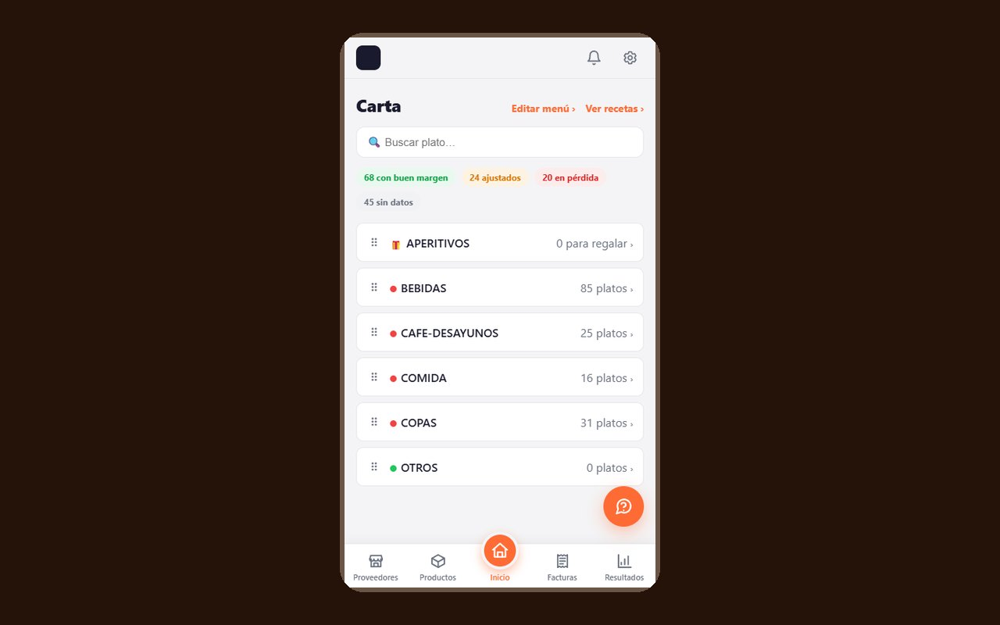
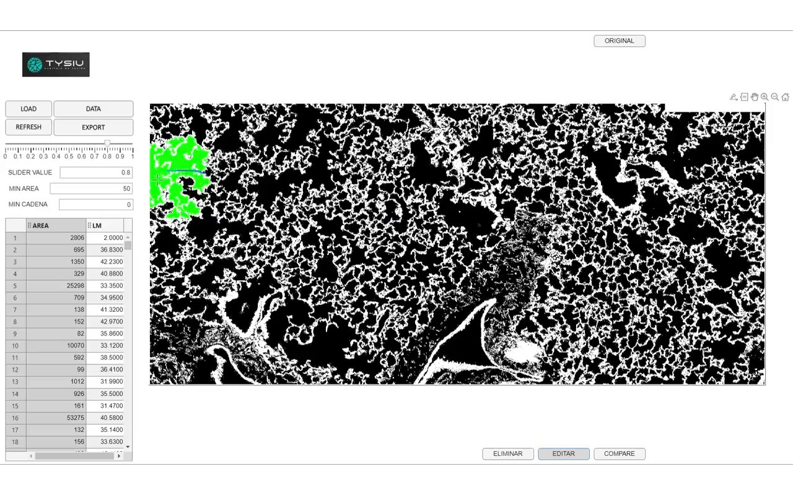
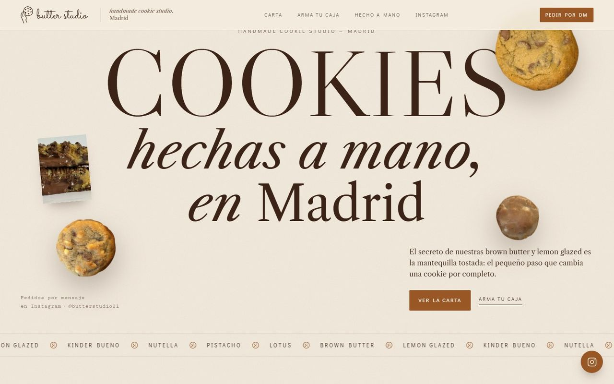
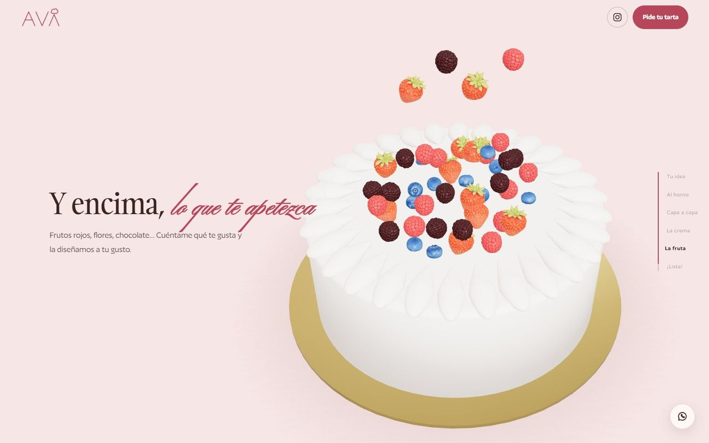

Orden por dentro. Marca por fuera.
Finanzas, tecnología y marca bajo un mismo plan, con las mismas personas de principio a fin.
adsPartners
Finance · Tech · Brand
Orden por dentro. Marca por fuera.
Finanzas, tecnología y marca para empresas que han crecido. Un solo equipo, dentro de vuestra empresa.
(01) — Lo que nos diferencia
Sin humo: números claros, procesos que funcionan solos y una marca que se entiende. Y alguien que da la cara.
Finanzas, tecnología y marca bajo un mismo plan, con las mismas personas de principio a fin.
Cada fase arranca con su alcance y su precio por escrito. Lo que se firma es lo que se paga.
Detrás de cada empresa hay una persona que revisa los números, los procesos y los avances.
Escribís y os contesta quien lleva vuestra cuenta. Sin tickets ni intermediarios.
115
facturas de proveedor leídas solas en un bar
Las herramientas que ya usáis, conectadas.
(02) — Servicios
Tres ramas, un solo objetivo: que vuestra empresa funcione sola.

Automatización e IAUna factura llega por correo, se lee sola y aparece en el cuadro de mando. Sin teclear.Flujos automáticosAsistentes de IAIntegraciones
Software a medidaAplicaciones y portales hechos para vuestra forma de trabajar, no al revés.Portales de clienteApps internasAnálisis de datos
Marca e identidadQué marcas tenéis, cuál manda y cómo se ven, con un manual para que todo el mundo las use igual.Arquitectura de marcaIdentidad visualManual
Diseño y desarrollo webWebs con un concepto propio de vuestro negocio, hechas con la misma identidad.Concepto propioEscena 3DPensada para el móvil(03) — Cómo trabajamos
Cuatro fases, un método. Sin humo.
Online o en persona, para ver si tiene sentido seguir. Sin compromiso.
Varios días dentro de vuestra empresa mirando números, procesos y marca. Con precio cerrado, y el mapa es vuestro sigáis o no.
El primer cierre con Finance en 30 días, el primer sistema con Tech en 4–6 semanas y la marca en 4–12, según el proyecto.
Una visita al mes y la misma persona al teléfono. Cada fase nueva, con su alcance y su precio cerrados.
(04) — Proyectos
Aplicación a medida
157Platos con su margen
Una foto de la factura del proveedor y la aplicación saca el margen de cada plato de la carta.
Software de análisis de imagen
Píxel a píxelTejido pulmonar
Software para el equipo de investigación de Neumomadrid: clasifica y mide cada región de la imagen.
Web con escena 3D propia
3DLa mantequilla se tuesta al bajar
Concepto, diseño, 3D y desarrollo, con dos propuestas, y la caja de cookies se pide por Instagram.
Ambición con orden. Y un mapa que es vuestro, sigáis o no.
(05) — Lo que dicen
Cada opinión es de un cliente con nombre y apellidos.
«Pasé de tirarme días haciendo artes finales y presentación para mis clientes a simplemente un clic. Por fin tengo tiempo para hacer mi trabajo bien y no presentaciones.»
«Lo que antes eran 3 personas a sueldo completo ahora es un sistema que funciona solo, y tengo a esas 3 personas haciendo lo que de verdad se les da bien, y no teclear.»
«De tener una idea a construir una verdadera marca que convence a nuestros clientes de nuestra profesionalidad en un mercado tan voraz como es el inmobiliario.»
adsPartners® · 2026
No trabajamos para empresas. Trabajamos dentro de ellas.
(06) — Preguntas frecuentes
No. Se puede empezar por una y sumar las otras cuando toque. Si nos preguntáis el orden: primero Finance, luego Tech y al final Brand. No tiene sentido automatizar lo que no se ha medido, ni contar fuera lo que dentro sigue desordenado.
No pasa nada. Os quedáis con el mapa: qué gana cada línea de negocio, qué procesos se comen las horas, cómo se ve cada marca y un plan con plazos y presupuesto. Es vuestro.
Tiene un precio cerrado y lo sabéis antes de empezar. Cubre finanzas, tecnología y marca a la vez. Si luego seguís, se descuenta entero del plan.
Sí. El Diagnóstico se hace en vuestra empresa, con varios días allí, y después vamos una vez al mes. Estéis donde estéis.
No. La gestoría registra y nosotros interpretamos. Fiscal, auditoría y contabilidad del día a día se quedan donde están.
El Diagnóstico son 3 o 4 semanas. Después, 30 días hasta el primer cierre con Finance, de 4 a 6 semanas hasta el primer sistema con Tech y de 4 a 12 con Brand, según el proyecto.
Si no podemos ayudaros, os lo diremos en la primera llamada. Y si podemos, os diremos exactamente cómo.